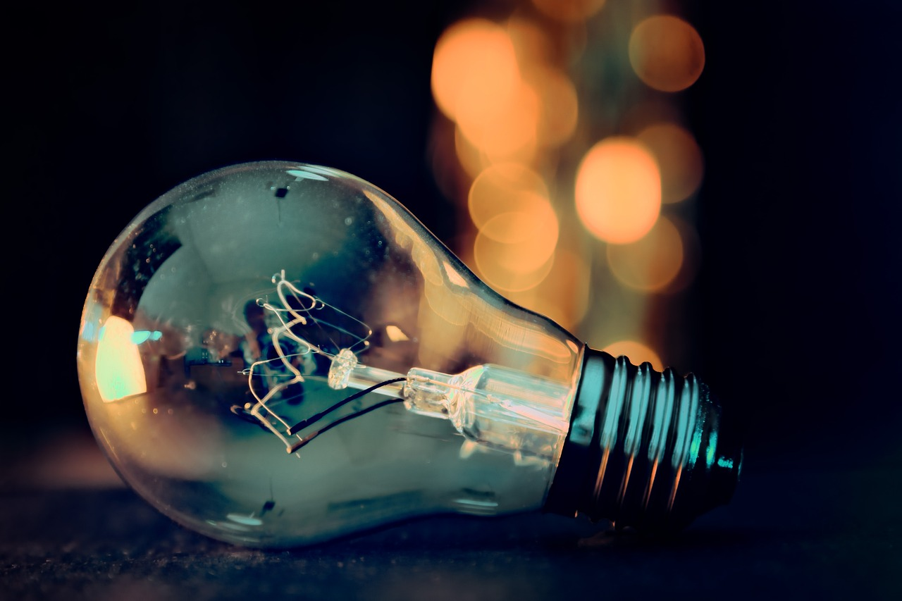
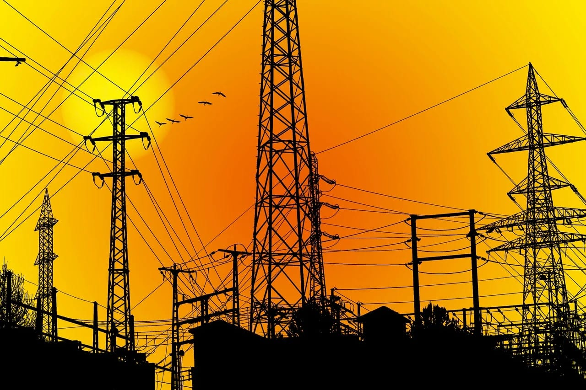
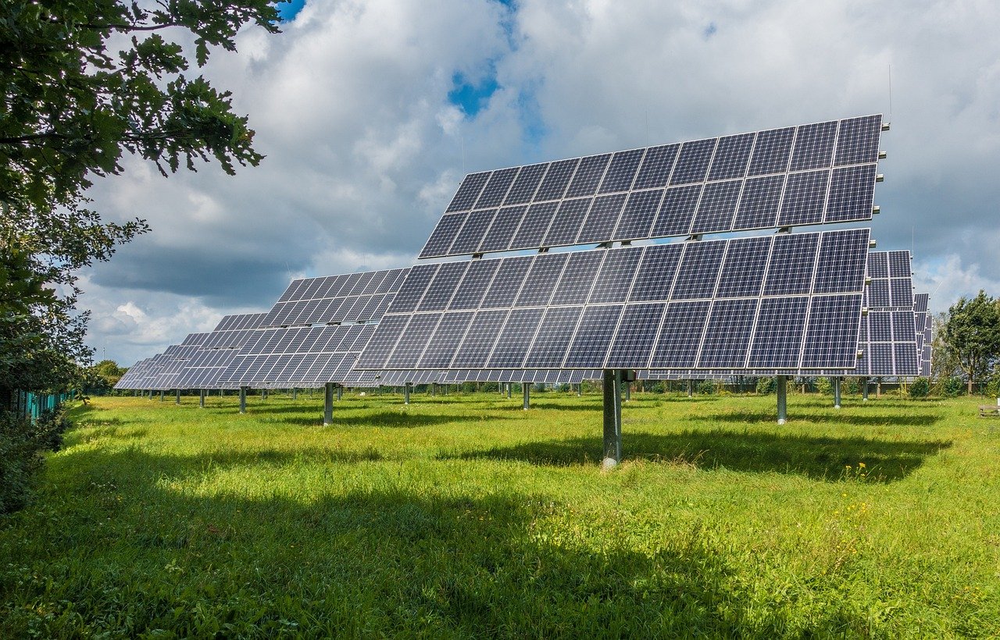

L’Agence Nationale de l’Électrification et des Services Énergétiques en Milieux Rural et Périurbain (ANSER) œuvre pour une RDC où l’énergie devient un levier de développement pour tous. Elle accompagne la transformation des territoires ruraux et périurbains en facilitant l’accès à l’électricité et aux services énergétiques essentiels.
À travers la planification, le financement et la coordination de projets structurants, l’ANSER favorise un développement énergétique durable et inclusif, qui réduit les inégalités territoriales et soutient l’essor économique local. Grâce à une approche décentralisée et orientée résultats, l’Agence mobilise les acteurs publics et privés, et met en œuvre des solutions adaptées aux réalités locales, pour garantir que chaque communauté puisse bénéficier d’une énergie fiable et durable.
Coordonner des projets d'électrification adaptés aux besoins locaux pour un développement équilibré.
Lire plus →Mobiliser et sécuriser les ressources pour construire des infrastructures électriques durables.
Lire plus →Soutenir l'accès à l'électricité pour les zones rurales et encourager un développement inclusif.
Lire plus →L’ANSER mène des projets ambitieux d’électrification rurale et périurbaine à travers tout le pays. Du déploiement de réseaux électriques à la construction de centrales solaires et à la réhabilitation de centrales hydroélectriques, chaque initiative vise à rapprocher l’énergie des communautés et à soutenir le développement local.
qui bénéficient déjà d’un accès fiable à l’électricité et à l’éclairage.
à travers le pays pour transformer durablement l’accès à l’énergie.


L'ANSER joue un rôle majeur dans le développement de la République Démocratique du Congo. Créée pour accélérer l’accès à l’électricité dans les zones rurales et périurbaines, elle contribue à réduire les inégalités entre les centres urbains et les régions longtemps restées à l’écart du progrès énergétique. Grâce à ses nombreux projets d’électrification, l’ANSER favorise l’amélioration des conditions de vie de millions de Congolais.
L’électricité stimule l’entrepreneuriat local, la transformation des produits agricoles et la création de revenus.
Les infrastructures énergétiques favorisent le développement de nouveaux métiers et des chaînes de valeur locales.